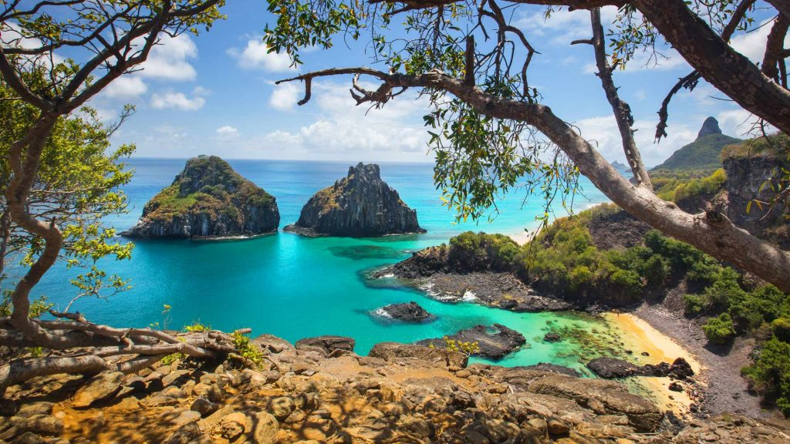

Descubra alguns dos melhores destinos turísticos na América do Sul.

Fernando de Noronha, Brasil
Fernando de Noronha é uma ilha paradisíaca localizada no oceano Atlântico, perto do litoral brasileiro. É
conhecida por suas praias de areia branca e águas cristalinas, assim como pela variedade de vida marinha
que habita suas águas. É um destino popular para mergulho e snorkel, bem como para caminhadas em trilhas
naturais.
Saiba mais

Buenos Aires, Argentina
Buenos Aires é a capital da Argentina e uma das cidades mais vibrante e cosmopolita da América do Sul.
Conhecida por sua arquitetura elegante, museus, teatros e restaurantes, é um destino popular para
turistas. A cidade também é famosa por sua cultura de tango e oferece muitas oportunidades para
experimentar a dança.
Saiba mais

Machu Picchu, Peru
Machu Picchu é uma antiga cidade inca localizada nas montanhas peruanas. É considerado um dos destinos
turísticos mais procurados da América do Sul e um patrimônio mundial da UNESCO. O local oferece uma
vista deslumbrante sobre as montanhas e a
paisagem circundante. Além disso, Machu Picchu é cercado por uma rica cultura e história.
Saiba mais

Rio de Janeiro
Rio de Janeiro é uma das cidades mais conhecidas e procuradas na América do Sul. É famosa por sua
vibrante cultura, belas praias e paisagens deslumbrantes, como o Pão de Açúcar e o Cristo Redentor. A
cidade é conhecida por sua animada vida noturna. A
cidade também é conhecida por suas praias, como Copacabana e Ipanema, que atraem turistas de todo o
mundo.
Saiba mais